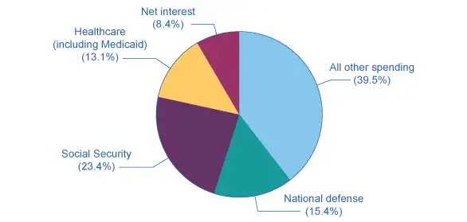
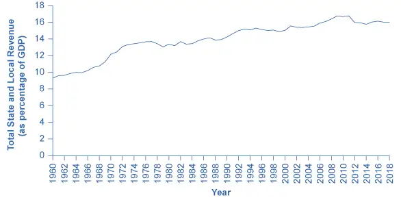
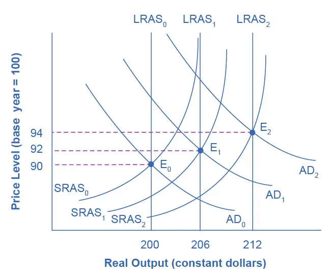
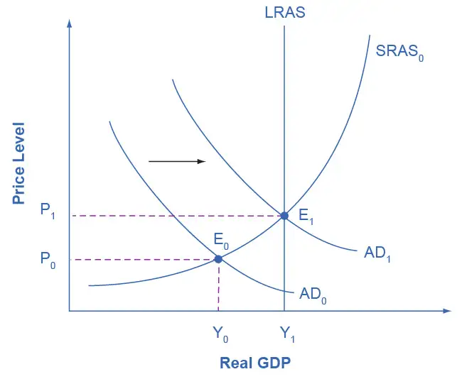
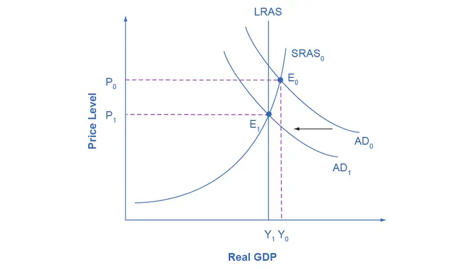
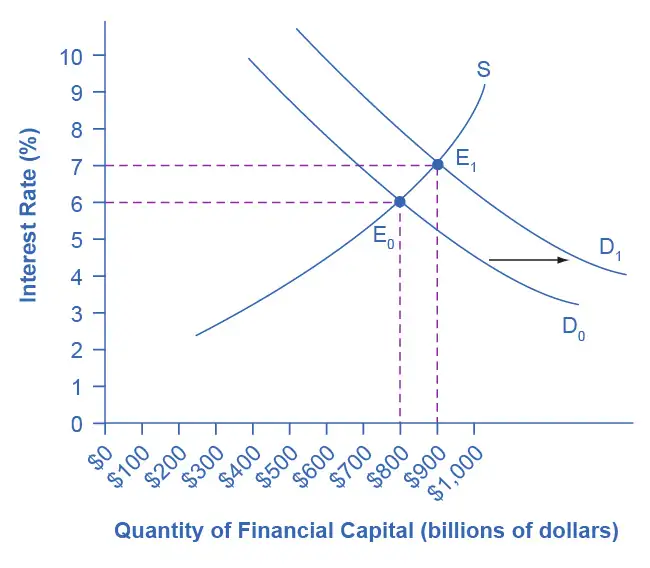

Chapter 30: Government Budgets and Fiscal Policy¶
Introduction¶
Bring It Home: No Yellowstone Park?
You had trekked all the way to see Yellowstone National Park in the beautiful month of October 2013, only to find it… closed. Closed! Why?
For two weeks in October 2013, the U.S. federal government shut down. Many federal services, like the national parks, closed and 800,000 federal employees were furloughed. Tourists were shocked and so was the rest of the world: Congress and the President could not agree on a budget. Inside the Capitol, Republicans and Democrats argued about spending priorities and whether to increase the national debt limit. Each year's budget, which is over $3 trillion of spending, must be approved by Congress and signed by the President. Two thirds of the budget are entitlements and other mandatory spending which occur without congressional or presidential action once the programs are established. Tied to the budget debate was the issue of increasing the debt ceiling—how high the U.S. government's national debt can be. The House of Representatives refused to sign on to the bills to fund the government unless they included provisions to stop or change the Affordable Health Care Act (more colloquially known as Obamacare). As the days progressed, the United States came very close to defaulting on its debt.
October 2013 was not the first time the government shut down, and it was not the last. Several brief shutdowns occurred in the early 1980s, and they occurred periodically in the following years. The longest shutdown took place between December 2018 and January 2019, when funding a border wall was a core disagreement.
Why does the federal budget create such intense debates? What would happen if the United States actually defaulted on its debt? In this chapter, we will examine the federal budget, taxation, and fiscal policy. We will also look at the annual federal budget deficits and the national debt.
Chapter Outline: Introduction to Government Budgets and Fiscal Policy
In this chapter, you will learn about:
- Government Spending
- Taxation
- Federal Deficits and the National Debt
- Using Fiscal Policy to Fight Recessions, Unemployment, and Inflation
- Automatic Stabilizers
- Practical Problems with Discretionary Fiscal Policy
- The Question of a Balanced Budget
All levels of government—federal, state, and local—have budgets that show how much revenue the government expects to receive in taxes and other income and how the government plans to spend it. Budgets, however, can shift dramatically within a few years, as policy decisions and unexpected events disrupt earlier tax and spending plans.
In this chapter, we revisit fiscal policy, which we first covered in Welcome to Economics! Fiscal policy is one of two policy tools for fine tuning the economy (the other is monetary policy). While policymakers at the Federal Reserve make monetary policy, Congress and the President make fiscal policy.
The discussion of fiscal policy focuses on how federal government taxing and spending affects aggregate demand. All government spending and taxes affect the economy, but fiscal policy focuses strictly on federal government policies. We begin with an overview of U.S. government spending and taxes. We then discuss fiscal policy from a short-run perspective; that is, how government uses tax and spending policies to address recession, unemployment, and inflation; how periods of recession and growth affect government budgets; and the merits of balanced budget proposals.
30.1 Government Spending¶
Learning Objectives
By the end of this section, you will be able to:
- Identify U.S. budget deficit and surplus trends over the past five decades
- Explain the differences between the U.S. federal budget, and state and local budgets
Government spending covers a range of services that the federal, state, and local governments provide. When the federal government spends more money than it receives in taxes in a given year, it runs a budget deficit. Conversely, when the government receives more money in taxes than it spends in a year, it runs a budget surplus. If government spending and taxes are equal, it has a balanced budget. For example, in 2020, the U.S. government experienced its largest budget deficit ever, as the federal government spent $3.1 trillion more than it collected in taxes. This deficit was about 15% of the size of the U.S. GDP in 2020, making it by far the largest budget deficit relative to GDP since the mammoth borrowing the government used to finance World War II. To put it into perspective, the previous record deficits were experienced during the Great Recession of 2007–2009, when the deficit reached 9.6% of GDP.
This section presents an overview of government spending in the United States.
Total U.S. Government Spending¶
Federal spending in nominal dollars (that is, dollars not adjusted for inflation) has grown by a multiple of more than 38 over the last four decades, from $93.4 billion in 1960 to $6.8 trillion in 2020. Comparing spending over time in nominal dollars is misleading because it does not take into account inflation or growth in population and the real economy. A more useful method of comparison is to examine government spending as a percent of GDP over time.
The top line in Figure 30.2 shows the federal spending level since 1960, expressed as a share of GDP. Despite a widespread sense among many Americans that the federal government has been growing steadily larger, the graph shows that federal spending has hovered in a range from 18% to 22% of GDP most of the time since 1960. For example, throughout the latter part of the 2010s, government expenditures were around 20% of GDP. The other lines in Figure 30.2 show the major federal spending categories: national defense, Social Security, health programs, and interest payments. From the graph, we see that national defense spending as a share of GDP has generally declined since the 1960s, although there were some upward bumps in the 1980s buildup under President Ronald Reagan and in the aftermath of the terrorist attacks on September 11, 2001. In contrast, Social Security and healthcare have grown steadily as a percent of GDP. Healthcare expenditures include both payments for senior citizens (Medicare), and payments for low-income Americans (Medicaid). State governments also partially fund Medicaid. Interest payments are the final main category of government spending in Figure 30.2.
![This graph illustrates five lines. There are lines for total federal spending, spending on national defense, spending on Social Security, spending on net interest on the debt, and spending on healthcare. The y-axis measures federal spending as a percentage of GDP, from 0 to 35 percent, in increments of 5 percent. The x-axis measures years, from 1960 to 2020. The line for total federal spending is above all the other lines. In 1960, it is around 17 percent, increases to around 23 percent in the early 1980s, declines slightly to 17 percent in 2000, then increases to nearly 25 percent in 2010, with a large increase in 2020 to over 30 percent. National defense starts at around 9 percent, and slowly declines around 4 percent in 2020. Social Security starts at around 2 percent and increases slowly to 5 percent in 2020. Net interest starts in 1960 at around 1 percent, is roughly constant through the 1960s and 1970s, then increases to 3 percent from 1985 to 2000, then decreases to around 1 percent in 2020. Spending on healthcare is nearly 0% in 1960, then it steadily increases to 4 percent in 2020.](img/cnx-econ3ev1-2-c30-02.webp)
Each year, the government borrows funds from U.S. citizens and foreigners to cover its budget deficits. It does this by selling securities (Treasury bonds, notes, and bills)—in essence borrowing from the public and promising to repay with interest in the future. From 1961 to 1997, the U.S. government has run budget deficits, and thus borrowed funds, in almost every year. It had budget surpluses from 1998 to 2001, and then returned to deficits.
The interest payments on past federal government borrowing were typically 1–2% of GDP in the 1960s and 1970s but then climbed above 3% of GDP in the 1980s and stayed there until the late 1990s. The government was able to repay some of its past borrowing by running surpluses from 1998 to 2001 and, with help from low interest rates, the interest payments on past federal government borrowing had fallen back to 1.6% of GDP by 2020.
We investigate the government borrowing and debt patterns in more detail later in this chapter, but first we need to clarify the difference between the deficit and the debt. The deficit is not the debt. The difference between the deficit and the debt lies in the time frame. The government deficit (or surplus) refers to what happens with the federal government budget each year. The government debt is accumulated over time. It is the sum of all past deficits and surpluses. If you borrow $10,000 per year for each of the four years of college, you might say that your annual deficit was $10,000, but your accumulated debt over the four years is $40,000.
These four categories—national defense, Social Security, healthcare, and interest payments—generally account for roughly 60% of all federal spending, as Figure 30.3 shows. (Due to the large amount of one-time expenditures by the federal government in 2020 due to the pandemic, the 2019 statistics are presented here.) The remaining 40% wedge of the pie chart covers all other categories of federal government spending: international affairs; science and technology; natural resources and the environment; transportation; housing; education; income support for people in poverty; community and regional development; law enforcement and the judicial system; and the administrative costs of running the government.

State and Local Government Spending¶
Although federal government spending often gets most of the media attention, state and local government spending is also substantial—at about $3.3 trillion in 2021. Figure 30.4 shows that state and local government spending has increased during the last four decades from around 8% to around 14% today. The single biggest item is education, which accounts for about one-third of the total. The rest covers programs like highways, libraries, hospitals and healthcare, parks, and police and fire protection. Unlike the federal government, all states (except Vermont) have balanced budget laws, which means any gaps between revenues and spending must be closed by higher taxes, lower spending, drawing down their previous savings, or some combination of all of these.
![This graph illustrates two lines: total spending by state and local governments, and education spending, as a percentage of GDP, measured over time. The y-axis measures state and local spending as a percentage of GDP, from 0 to 18, in increments of 2 percent. The x-axis measures years, from 1960 to 2020. The total spending line is above the education spending line. In 1960 total spending is around 8 percent of GDP, and it steadily increases to 13 percent in 1975, then it increases again to around 14 percent in the early 1990s, then again to almost 16 percent in 2010, and then it declines to 14 percent in 2020. Education spending as a percentage of GDP starts at 3 percent in 1960, and increases to 5 percent in 1975, and it is roughly flat at 5 percent to 2020.](img/cnx-econ3ev1-2-c30-04.webp)
U.S. presidential candidates often run for office pledging to improve the public schools or to get tough on crime. However, in the U.S. government system, these tasks are primarily state and local government responsibilities. In fiscal year 2020 state and local governments spent about $970 billion per year on education (including K–12 and college and university education), compared to only $100 billion by the federal government. In other words, about 90 cents of every dollar spent on education happens at the state and local level. A politician who really wants hands-on responsibility for reforming education or reducing crime might do better to run for mayor of a large city or for state governor rather than for president of the United States.
Taxes are paid by most, but not all, people who work. Even if you are part of the so-called “1099” or “gig” economy, you are considered an independent contractor and must pay taxes on the income you earn in those occupations. Taxes are also paid by consumers whenever they purchase goods and services. Taxes are used for all sorts of spending—from roads, to bridges, to schools (K–12 and public higher education), to police and other public safety functions. Taxes fund vital public services that support our communities.
30.2 Taxation¶
Learning Objectives
By the end of this section, you will be able to:
- Differentiate among a regressive tax, a proportional tax, and a progressive tax
- Identify major revenue sources for the U.S. federal budget
There are two main categories of taxes: those that the federal government collects and those that the state and local governments collect. What percentage the government collects and for what it uses that revenue varies greatly. The following sections will briefly explain the taxation system in the United States.
Taxes are paid by most, but not all, people who work. Even if you are part of the so-called “1099” or “gig” economy, you are considered an independent contractor and must pay taxes on the income you earn in those occupations. Taxes are also paid by consumers whenever they purchase goods and services. Taxes are used for all sorts of spending—from roads, to bridges, to schools (K–12 and public higher education), to police and other public safety functions. Taxes fund vital public services that support our communities.
Federal Taxes¶
Just as many Americans erroneously think that federal spending has grown considerably, many also believe that taxes have increased substantially. The top line of Figure 30.5 shows total federal taxes as a share of GDP since 1960. Although the line rises and falls, it typically remains within the range of 17% to 20% of GDP, except for 2009–2011, when taxes fell substantially below this level, due to the Great Recession.
![This graph illustrates five lines, each measured as a percentage of GDP: total federal tax receipts, individual income tax, payroll taxes, excise taxes, and corporate taxes. The y-axis measures federal taxes as a percentage of GDP, from 0 to 25 percent, in increments of 5 percent. The x-axis shows years, from 1960 to 2020. The total federal tax receipts line is above all the others. It starts at around 17 percent of GDP, and moves up and down between slightly over 15 percent to 19 percent between 1960 and 2000. In 2000 it peaks at 20 percent, then it declines to 15 percent in 2004, increases in 2005 to 16 percent, decreases again to under 15 percent in 2009, increases to 17 percent in 2015, then decreases to around 16 percent in 2020. Individual income taxes start in 1960 as 7 percent of GDP, then gradually increases, with a few small increases and decreases, reaching nearly 10 percent in 2020. It then decreases to 6 percent in 2009, and increases to around 7 percent in 2020. Payroll taxes are 4 percent of GDP in 1960, then increase to 6 percent in the early 1980s, and are generally constant at that rate to 2020. Excise taxes are around 3 percent of GDP in 1960, slowly decrease over time to around 2 percent in 2020. Corporate taxes as a percentage of GDP are 3 percent in 1960, increase to 4 percent in the late 1960s, then decline over time to 1 percent in 2020.](img/cnx-econ3ev1-2-c30-05.webp)
Figure 30.5 also shows the taxation patterns for the main categories that the federal government taxes: individual income taxes, corporate income taxes, and social insurance and retirement receipts. When most people think of federal government taxes, the first tax that comes to mind is the individual income tax that is due every year on April 15 (or the first business day after). The personal income tax is the largest single source of federal government revenue, but it still represents less than half of federal tax revenue.
The second largest source of federal revenue is the payroll tax (captured in social insurance and retirement receipts), which provides funds for Social Security and Medicare. Payroll taxes have increased steadily over time. Together, the personal income tax and the payroll tax accounted for over 85% of federal tax revenues in 2020. Although personal income tax revenues account for more total revenue than the payroll tax, nearly three-quarters of households pay more in payroll taxes than in income taxes.
The income tax is a progressive tax, which means that the tax rates increase as a household’s income increases. Taxes also vary with marital status, family size, and other factors. The marginal tax rates (the tax due on all yearly income) for a single taxpayer range from 10% to 35%, depending on income, as the following Clear It Up feature explains.
Clear It Up: How does the marginal rate work?
Suppose that a single taxpayer’s income is $35,000 per year. Also suppose that income from $0 to $9,075 is taxed at 10%, income from $9,075 to $36,900 is taxed at 15%, and, finally, income from $36,900 and beyond is taxed at 25%. Since this person earns $35,000, their marginal tax rate is 15%.
The key fact here is that the federal income tax is designed so that tax rates increase as income increases, up to a certain level. The payroll taxes that support Social Security and Medicare are designed in a different way. First, the payroll taxes for Social Security are imposed at a rate of 12.4% up to a certain wage limit, set at $137,700 in 2020. Medicare, on the other hand, pays for elderly healthcare, and is fixed at 2.9%, with no upper ceiling.
In both cases, the employer and the employee split the payroll taxes. An employee only sees 6.2% deducted from their paycheck for Social Security, and 1.45% from Medicare. However, as economists are quick to point out, the employer’s half of the taxes are probably passed along to the employees in the form of lower wages, so in reality, the worker pays all of the payroll taxes. If you are a member of the “gig economy” and receive a 1099 tax statement, then you are considered an independent contractor and so you must pay the employee and employer side of the payroll tax.
We also call the Medicare payroll tax a proportional tax; that is, a flat percentage of all wages earned. The Social Security payroll tax is proportional up to the wage limit, but above that level it becomes a regressive tax, meaning that people with higher incomes pay a smaller share of their income in tax.
The third-largest source of federal tax revenue, as Figure 30.5 shows is the corporate income tax. The common name for corporate income is “profits.” Over time, corporate income tax receipts have declined as a share of GDP, from about 4% in the 1960s to an average of 1% to 2% of GDP in the past 40 years.
The federal government has a few other, smaller sources of revenue. It imposes an excise tax—that is, a tax on a particular good—on gasoline, tobacco, and alcohol. As a share of GDP, the amount the government collects from these taxes has stayed nearly constant over time, from about 2% of GDP in the 1960s to roughly 3% by 2020, according to the nonpartisan Congressional Budget Office. The government also imposes an estate and gift tax on people who pass large amounts of assets to the next generation—either after death or during life in the form of gifts. These estate and gift taxes collected about 0.2% of GDP in 2020. By a quirk of legislation, the government repealed the estate and gift tax in 2010, but reinstated it in 2011. Other federal taxes, which are also relatively small in magnitude, include tariffs the government collects on imported goods and charges for inspections of goods entering the country.
State and Local Taxes¶
At the state and local level, taxes have been rising as a share of GDP over the last few decades to match the gradual rise in spending, as Figure 30.6 illustrates. The main revenue sources for state and local governments are sales taxes, property taxes, and revenue passed along from the federal government, but many state and local governments also levy personal and corporate income taxes, as well as impose a wide variety of fees and charges. The specific sources of tax revenue vary widely across state and local governments. Some states rely more on property taxes, some on sales taxes, some on income taxes, and some more on revenues from the federal government.

30.3 Federal Deficits and the National Debt¶
Learning Objectives
By the end of this section, you will be able to:
- Explain the U.S. federal budget in terms of annual debt and accumulated debt
- Understand how economic growth or decline can influence a budget surplus or budget deficit
Having discussed the revenue (taxes) and expense (spending) side of the budget, we now turn to the annual budget deficit or surplus, which is the difference between the tax revenue collected and spending over a fiscal year, which starts October 1 and ends September 30 of the next year.
Figure 30.7 shows the pattern of annual federal budget deficits and surpluses, back to 1930, as a share of GDP. When the line is above the horizontal axis, the budget is in surplus. When the line is below the horizontal axis, a budget deficit occurred. Clearly, the biggest deficits as a share of GDP during this time were incurred to finance World War II. Deficits were also large during the 1930s, the 1980s, the early 1990s, 2007–2009 (the Great Recession), and 2020 (the pandemic-induced recession).
![This graph illustrates the federal deficit as a percentage of GDP and how it changes over time. The y-axis measures the federal deficit as a percentage of GDP, from –35 percent to 10 percent, in increments of 5 percent. A negative percentage means the government is running a budget deficit. The x-axis measures years, from 1930 to 2020. In 1930 there was a small budget surplus of around 0.5 percent of GDP. Then in the 1930s there is a budget deficit of –5 percent of GDP, which grows to 27 percent of GDP by the mid-1940s. By the late 1940s there is a budget surplus of 4 percent of GDP, and this steadily decreases into a deficit of 5 percent of GDP by the mid-1980s. The deficit slowly decreases and becomes a surplus of around 1 percent of GDP in 2000, then quickly becomes a budget deficit of around 2 percent in 2001, increasing to a budget deficit of 10 percent of GDP in 2009, decreasing to a budget deficit of 2 percent of GDP in 2015, then increasing again to a budget deficit of nearly 15 percent of GDP in 2020.](img/cnx-econ3ev1-2-c30-07.webp)
Federal Surplus or Deficit as a Percentage of Gross Domestic Product
Debt/GDP Ratio¶
Another useful way to view the budget deficit is through the prism of accumulated debt rather than annual deficits. The national debt refers to the total amount that the government has borrowed over time. In contrast, the budget deficit refers to how much the government has borrowed in one particular year. Figure 30.8 shows the ratio of debt/GDP since 1966. Until the 1970s, the debt/GDP ratio revealed a fairly clear pattern of federal borrowing. The government ran up large deficits and raised the debt/GDP ratio in World War II, but from the 1950s to the 1970s the government ran either surpluses or relatively small deficits, and so the debt/GDP ratio drifted down. Large deficits in the 1980s and early 1990s caused the ratio to rise sharply. When budget surpluses arrived from 1998 to 2001, the debt/GDP ratio declined substantially. The budget deficits starting in 2002 then tugged the debt/GDP ratio higher—with a big jump when the recession took hold in 2008–2009. There was another leap in the ratio in 2020.
![This graph illustrates the federal debt as a percentage of GDP over time. The y-axis measures the federal debt as a percentage of GDP, from 0 to 140 percent, in increments of 10 percent. The x-axis shows years, from 1970 to 2020. The line begins in 1970 at around 38 percent of GDP, decreases slightly to around 30 percent of GDP in 1980, the increases to 60 percent of GDP in the early 1990s, decreases to around 50 percent of GDP in 2000, then increases to 100 percent of GDP around 2012, is roughly flat for a few years, then increases to over 120 percent of GDP in 2020.](img/cnx-econ3ev1-2-c30-08.webp)
The next Clear it Up feature discusses how the government handles the national debt.
Clear It Up: What is the national debt?
One year’s federal budget deficit causes the federal government to sell Treasury bonds to make up the difference between spending programs and tax revenues. The dollar value of all the outstanding Treasury bonds on which the federal government owes money is equal to the national debt.
Gross Federal Debt as a Percentage of Gross Domestic Product
The Path from Deficits to Surpluses to Deficits¶
Why did the budget deficits suddenly turn to surpluses from 1998 to 2001 and why did the surpluses return to deficits in 2002? Why did the deficit become so large in 2020? Figure 30.9 suggests some answers. The graph combines the earlier information on total federal spending and taxes in a single graph, but focuses on the federal budget since 1990.
![This graph illustrates two lines: total government spending as a percentage of GDP over time and government tax receipts as a percentage of GDP over time. The y-axis measures total government spending and taxes over time as a percentage of GDP, from 10 to 32 percent, in increments of 2 percent. The x-axis measures years, from 1990 to 2020. The total spending line is almost always above the tax receipts line, except in the late 1990s to around 2001. In 1990 total government spending as a percentage of GDP is around 21 percent, and it decreases to around 18 percent in 2001. It increases to around 20 percent in 2008, then spikes to 24 percent in 2009. It then decreases to 20 percent in 2014, is roughly flat until 2019, then spikes in 2020 to 32 percent of GDP. Tax receipts as a percentage of GDP begins at around 18 percent in 1990, increases to 20 percent in 2000, then declines to 16 percent in 2004, and moves up and down between 16 and 18 percent to 2020.](img/cnx-econ3ev1-2-c30-09.webp)
Government spending as a share of GDP declined steadily through the 1990s. The biggest single reason was that defense spending declined from 5.2% of GDP in 1990 to 3.0% in 2000, but interest payments by the federal government also fell by about 1.0% of GDP. However, federal tax collections increased substantially in the later 1990s, jumping from 18.1% of GDP in 1994 to 20.8% in 2000. Powerful economic growth in the late 1990s fueled the boom in taxes. Personal income taxes rise as income goes up; payroll taxes rise as jobs and payrolls go up; corporate income taxes rise as profits go up. At the same time, government spending on transfer payments such as unemployment benefits, foods stamps, and welfare declined with more people working.
This sharp increase in tax revenues and decrease in expenditures on transfer payments was largely unexpected even by experienced budget analysts, and so budget surpluses came as a surprise. However, in the early 2000s, many of these factors started running in reverse. Tax revenues sagged, due largely to the recession that started in March 2001, which reduced revenues. Congress enacted a series of tax cuts and President George W. Bush signed them into law, starting in 2001. In addition, government spending swelled due to increases in defense, healthcare, education, Social Security, and support programs for those who were hurt by the recession and the slow growth that followed. Deficits returned. When the severe recession hit in late 2007, spending climbed and tax collections fell to historically unusual levels, resulting in enormous deficits.
Longer-term U.S. budget forecasts, a decade or more into the future, predict enormous deficits. The higher deficits during the 2007–2009 Great Recession and the 2020 pandemic-induced recession have repercussions, and the demographics will be challenging. The primary reason is the “baby boom”—the exceptionally high birthrates that began in 1946, right after World War II, and lasted for about two decades. Starting in 2010, the front edge of the baby boom generation reached age 65, and in the next two decades, the proportion of Americans over the age of 65 will increase substantially. During the 2020 recession, we saw another wave of early retirements, and we are now in the middle of this major demographic shift. The current level of the payroll taxes that support Social Security and Medicare will fall well short of the projected expenses of these programs, as the following Clear It Up feature shows; thus, the forecast is for increasingly large budget deficits. A decision to collect more revenue to support these programs or to decrease benefit levels would alter this long-term forecast.
Clear It Up: What is the long-term budget outlook for Social Security and Medicare?
In 1946, just one American in 13 was over age 65. By 2000, it was one in eight. By 2030, one American in five will be over age 65. Two enormous U.S. federal programs focus on the elderly—Social Security and Medicare. The growing numbers of elderly Americans will increase spending on these programs, as well as on Medicaid. The current payroll tax levied on workers, which supports all of Social Security and the hospitalization insurance part of Medicare, will not be enough to cover the expected costs, so what are the options?
Long-term projections from the Congressional Budget Office in 2021 are that Medicare and Social Security spending combined will rise from 8.7% of GDP in 2021 to about 10.8% by 2027–2031. If this rise in spending occurs, without any corresponding rise in tax collections, then some mix of changes must occur: (1) taxes will need to increase dramatically; (2) other spending will need to be cut dramatically; (3) the retirement age and/or age receiving Medicare benefits will need to increase, or (4) the federal government will need to run extremely large budget deficits.
Some proposals suggest removing the cap on wages subject to the payroll tax, so that those with very high incomes would have to pay the tax on the entire amount of their wages. Other proposals suggest moving Social Security and Medicare from systems in which workers pay for retirees toward programs that set up accounts where workers save funds over their lifetimes and then draw out after retirement to pay for healthcare.
The United States is not alone in this problem. Providing the promised level of retirement and health benefits to a growing proportion of elderly with a falling proportion of workers is an even more severe problem in many European nations and in Japan. How to pay promised levels of benefits to the elderly will be a difficult public policy decision.
In the next module we shift to the use of fiscal policy to counteract business cycle fluctuations. In addition, we will explore proposals requiring a balanced budget—that is, for government spending and taxes to be equal each year. The Impacts of Government Borrowing will also cover how fiscal policy and government borrowing will affect national saving—and thus affect economic growth and trade imbalances.
30.4 Using Fiscal Policy to Fight Recession, Unemployment, and Inflation¶
Learning Objectives
By the end of this section, you will be able to:
- Explain how expansionary fiscal policy can shift aggregate demand and influence the economy
- Explain how contractionary fiscal policy can shift aggregate demand and influence the economy
Fiscal policy is the use of government spending and tax policy to influence the path of the economy over time. Graphically, we see that fiscal policy, whether through changes in spending or taxes, shifts the aggregate demand outward in the case of expansionary fiscal policy and inward in the case of contractionary fiscal policy. We know from the chapter on economic growth that over time the quantity and quality of our resources grow as the population and thus the labor force get larger, as businesses invest in new capital, and as technology improves. The result of this is regular shifts to the right of the aggregate supply curves, as Figure 30.10 illustrates.
The original equilibrium occurs at E0, the intersection of aggregate demand curve AD0 and aggregate supply curve SRAS0, at an output level of 200 and a price level of 90. One year later, aggregate supply has shifted to the right to SRAS1 in the process of long-term economic growth, and aggregate demand has also shifted to the right to AD1, keeping the economy operating at the new level of potential GDP. The new equilibrium (E1) is an output level of 206 and a price level of 92. One more year later, aggregate supply has again shifted to the right, now to SRAS2, and aggregate demand shifts right as well to AD2. Now the equilibrium is E2, with an output level of 212 and a price level of 94. In short, the figure shows an economy that is growing steadily year to year, producing at its potential GDP each year, with only small inflationary increases in the price level.

Aggregate demand and aggregate supply do not always move neatly together. Think about what causes shifts in aggregate demand over time. As aggregate supply increases, incomes tend to go up. This tends to increase consumer and investment spending, shifting the aggregate demand curve to the right, but in any given period it may not shift the same amount as aggregate supply. What happens to government spending and taxes? Government spends to pay for the ordinary business of government- items such as national defense, social security, and healthcare, as Figure 30.10 shows. Tax revenues, in part, pay for these expenditures. The result may be an increase in aggregate demand more than or less than the increase in aggregate supply. Aggregate demand may fail to increase along with aggregate supply, or aggregate demand may even shift left, for a number of possible reasons: households become hesitant about consuming; firms decide against investing as much; or perhaps the demand from other countries for exports diminishes.
For example, investment by private firms in physical capital in the U.S. economy boomed during the late 1990s, rising from 14.1% of GDP in 1993 to 17.2% in 2000, before falling back to 15.2% by 2002. Conversely, if shifts in aggregate demand run ahead of increases in aggregate supply, inflationary increases in the price level will result. Business cycles of recession and recovery are the consequence of shifts in aggregate supply and aggregate demand. As these occur, the government may choose to use fiscal policy to address the difference.
Monetary Policy and Bank Regulation shows us that a central bank can use its powers over the banking system to engage in countercyclical—or “against the business cycle”—actions. If recession threatens, the central bank uses an expansionary monetary policy to increase the money supply, increase the quantity of loans, reduce interest rates, and shift aggregate demand to the right. If inflation threatens, the central bank uses contractionary monetary policy to reduce the money supply, reduce the quantity of loans, raise interest rates, and shift aggregate demand to the left. Fiscal policy is another macroeconomic policy tool for adjusting aggregate demand by using either government spending or taxation policy.
Expansionary Fiscal Policy¶
Expansionary fiscal policy increases the level of aggregate demand, through either increases in government spending or reductions in tax rates. Expansionary policy can do this by (1) increasing consumption by raising disposable income through cuts in personal income taxes or payroll taxes; (2) increasing investment spending by raising after-tax profits through cuts in business taxes; and (3) increasing government purchases through increased federal government spending on final goods and services and raising federal grants to state and local governments to increase their expenditures on final goods and services. Contractionary fiscal policy does the reverse: it decreases the level of aggregate demand by decreasing consumption, decreasing investment, and decreasing government spending, either through cuts in government spending or increases in taxes. The aggregate demand/aggregate supply model is useful in judging whether expansionary or contractionary fiscal policy is appropriate.
Consider first the situation in Figure 30.11, which is similar to the U.S. economy during the 2007-2009 recession. The intersection of aggregate demand (AD0) and aggregate supply (SRAS0) is occurring below the level of potential GDP as the LRAS curve indicates. At the equilibrium (E0), a recession occurs and unemployment rises. In this case, expansionary fiscal policy using tax cuts or increases in government spending can shift aggregate demand to AD1, closer to the full-employment level of output. In addition, the price level would rise back to the level P1 associated with potential GDP.

Should the government use tax cuts or spending increases, or a mix of the two, to carry out expansionary fiscal policy? During the 2007-2009 Great Recession, the U.S. economy suffered a 3.1% cumulative loss of GDP. That may not sound like much, but it’s more than one year’s average growth rate of GDP. Over that time frame, the unemployment rate doubled from 5% to 10%. The choice between whether to use tax or spending tools often has a political tinge. As a general statement, conservatives and Republicans prefer to see expansionary fiscal policy carried out by tax cuts, while liberals and Democrats prefer that the government implement expansionary fiscal policy through spending increases. In a bipartisan effort to address the extreme situation, the Obama administration and Congress passed an $830 billion expansionary policy in early 2009 involving both tax cuts and increases in government spending. At the same time, however, the federal stimulus was partially offset when state and local governments, whose budgets were hard hit by the recession, began cutting their spending.
Events were even more severe during the more recent pandemic-induced recession. In a single quarter (Quarter 2 of 2020), GDP fell by over 9%, or at an annualized rate of about 34%. Policymakers were quick to respond with expanded unemployment insurance, aid to state and local governments (so that they didn’t have to cut their spending like they did during the Great Recession), grants and tax breaks for small businesses, and perhaps most significantly, stimulus checks sent to over 100 million households, totaling thousands of dollars each. Since these were mostly spending measures, they were supported more by Democrats than by Republicans, although both groups recognized the severity of the problem and were largely in agreement early on. Especially during the debates over later rounds of the stimulus checks, many discussions were had over the appropriate size and target of the checks. Ultimately, compromises were made and no side got exactly what it wanted.
The conflict over which policy tool to use can be frustrating to those who want to categorize economics as “liberal” or “conservative,” or who want to use economic models to argue against their political opponents. However, advocates of smaller government, who seek to reduce taxes and government spending can use the AD AS model, as well as advocates of bigger government, who seek to raise taxes and government spending. Economic studies of specific taxing and spending programs can help inform decisions about whether the government should change taxes or spending, and in what ways. Ultimately, decisions about whether to use tax or spending mechanisms to implement macroeconomic policy is a political decision rather than a purely economic one.
Contractionary Fiscal Policy¶
Fiscal policy can also contribute to pushing aggregate demand beyond potential GDP in a way that leads to inflation. As Figure 30.12 shows, a very large budget deficit pushes up aggregate demand, so that the intersection of aggregate demand (AD0) and aggregate supply (SRAS0) occurs at equilibrium E0, which is an output level above potential GDP. Economists sometimes call this an “overheating economy” where demand is so high that there is upward pressure on wages and prices, causing inflation. In this situation, contractionary fiscal policy involving federal spending cuts or tax increases can help to reduce the upward pressure on the price level by shifting aggregate demand to the left, to AD1, and causing the new equilibrium E1 to be at potential GDP, where aggregate demand intersects the LRAS curve.

Again, the AD–AS model does not dictate how the government should carry out this contractionary fiscal policy. Some may prefer spending cuts; others may prefer tax increases; still others may say that it depends on the specific situation. The model only argues that, in this situation, the government needs to reduce aggregate demand.
30.5 Automatic Stabilizers¶
Learning Objectives
By the end of this section, you will be able to:
- Describe how the federal government can use discretionary fiscal policy to stabilize the economy
- Identify examples of automatic stabilizers
- Understand how a government can use standardized employment budget to identify automatic stabilizers
In 2020, more than 20 million people could collect unemployment insurance benefits to replace some of their salaries. Federal fiscal policies include discretionary fiscal policy, when the government passes a new law that explicitly changes tax or spending levels. The 2020 stimulus checks and increases in state and local government aid are an example. Changes in tax and spending levels can also occur automatically, due to automatic stabilizers, such as unemployment insurance and food stamps, which are programs that are already laws that stimulate aggregate demand in a recession and hold down aggregate demand in a potentially inflationary boom.
Counterbalancing Recession and Boom¶
Consider first the situation where aggregate demand has risen sharply, causing the equilibrium to occur at a level of output above potential GDP. This situation will increase inflationary pressure in the economy. The policy prescription in this setting would be a dose of contractionary fiscal policy, implemented through some combination of higher taxes and lower spending. To some extent, both changes happen automatically. On the tax side, a rise in aggregate demand means that workers and firms throughout the economy earn more. Because taxes are based on personal income and corporate profits, a rise in aggregate demand automatically increases tax payments. On the spending side, stronger aggregate demand typically means lower unemployment and fewer layoffs, and so there is less need for government spending on unemployment benefits, welfare, Medicaid, and other programs in the social safety net.
The process works in reverse, too. If aggregate demand were to fall sharply so that a recession occurs, then the prescription would be for expansionary fiscal policy—some mix of tax cuts and spending increases. The lower level of aggregate demand and higher unemployment will tend to pull down personal incomes and corporate profits, an effect that will reduce the amount of taxes owed automatically. Higher unemployment and a weaker economy should lead to increased government spending on unemployment benefits, welfare, and other similar domestic programs. In 2009, the stimulus package included an extension in the time allowed to collect unemployment insurance. In addition, the automatic stabilizers react to a weakening of aggregate demand with expansionary fiscal policy and react to a strengthening of aggregate demand with contractionary fiscal policy, just as the AD/AS analysis suggests.
A combination of automatic stabilizers and discretionary fiscal policy produced the very large budget deficit in 2020. The pandemic caused high levels of unemployment, meaning less tax-generating economic activity. The high unemployment rate triggered the automatic stabilizers that reduce taxes and increase spending, due to the increased amount of unemployment insurance paid out by the federal and state governments. Most economists, even those who are concerned about a possible pattern of persistently large budget deficits, are much less concerned or even quite supportive of larger budget deficits in the short run of a few years during and immediately after a severe recession.
A glance back at economic history provides a second illustration of the power of automatic stabilizers. Remember that the length of economic upswings between recessions has become longer in the U.S. economy in recent decades (as we discussed in Unemployment). The three longest economic booms of the twentieth century happened in the 1960s, the 1980s, and the 1991–2001 time period. One reason why the economy has tipped into recession less frequently in recent decades is that the size of government spending and taxes has increased in the second half of the twentieth century. Thus, the automatic stabilizing effects from spending and taxes are now larger than they were in the first half of the twentieth century. Around 1900, for example, federal spending was only about 2% of GDP. In 1929, just before the Great Depression hit, government spending was still just 4% of GDP. In those earlier times, the smaller size of government made automatic stabilizers far less powerful than in the last few decades, when government spending often hovers at 20% of GDP or more.
The Standardized Employment Deficit or Surplus¶
Each year, the nonpartisan Congressional Budget Office (CBO) calculates the standardized employment budget—that is, what the budget deficit or surplus would be if the economy were producing at potential GDP, where people who look for work were finding jobs in a reasonable period of time and businesses were making normal profits, with the result that both workers and businesses would be earning more and paying more taxes. In effect, the standardized employment deficit eliminates the impact of the automatic stabilizers. Figure 30.13 compares the actual budget deficits of recent decades with the CBO’s standardized deficit.
Link It Up
Visit this website to learn more from the Congressional Budget Office.
![This graph illustrates two lines: the standardized deficit surplus and the actual deficit surplus, as percentages of GDP, changing over time. The y-axis measures the percentage of GDP, from –10 to 4, in increments of 2 percent. The x-axis shows years, from 1965 to 2020. Both lines follow nearly the exact same pattern, as both are rising and falling at roughly the same time. Each begins at around 0 percent of GDP in 1965, then in 1969 they decline to a nearly –4 percent of GDP standardized deficit surplus and –3 percent actual deficit surplus, both increasing back to around 0 percent in 1970, then both steadily decline to around –5 percent by the mid-1980s, then both increase to around 2 percent in 2000, then decrease again to around –3 percent in 2005, increase to around –1 percent in 2008, then the standardized deficit surplus decreases to –7 percent in 2009, and the actual decreases to –9 percent in 2009. Both increase to around –2 percent in 2015, then decrease to –5 percent in 2020.](img/cnx-econ3ev1-2-c30-13.webp)
Notice that in recession years, like the early 1990s, 2001, or 2009, the standardized employment deficit is smaller than the actual deficit. (These data are only available up until February 2020, so they do not include the effects of the pandemic.) During recessions, the automatic stabilizers tend to increase the budget deficit, so if the economy was instead at full employment, the deficit would be reduced. However, in the late 1990s the standardized employment budget surplus was lower than the actual budget surplus. The gap between the standardized budget deficit or surplus and the actual budget deficit or surplus shows the impact of the automatic stabilizers. More generally, the standardized budget figures allow you to see what the budget deficit would look like with the economy held constant—at its potential GDP level of output.
Automatic stabilizers occur quickly. Lower wages means that a lower amount of taxes is withheld from paychecks right away. Higher unemployment or poverty means that government spending in those areas rises as quickly as people apply for benefits. However, while the automatic stabilizers offset part of the shifts in aggregate demand, they do not offset all or even most of it. Historically, automatic stabilizers on the tax and spending side offset about 10% of any initial movement in the level of output. This offset may not seem enormous, but it is still useful. Automatic stabilizers, like shock absorbers in a car, can be useful if they reduce the impact of the worst bumps, even if they do not eliminate the bumps altogether.
Child Tax Credit¶
One new form of government spending meant to support working families is an expanded Child Tax Credit (CTC). Under changes which took effect in 2021, qualifying families will receive the credit as a monthly payment directly into their bank accounts. The credit is also an expanded amount: from $2,000 per child to $3,600 per child under the age of 6 (less for children older than that). Introduced by President Joe Biden’s American Rescue Plan, it is hoped that the newly expanded CTC will help reduce child poverty and support families. Because the CTC works like a grant that is automatically extended to households, the CTC is considered a new kind of fiscal policy that is related to a universal basic income policy which some have argued for in the past. By sending money out monthly instead of a lump sum as part of a person’s tax refund, the intention is to help families better manage monthly bills for things like clothes and food.
30.6 Practical Problems with Discretionary Fiscal Policy¶
Learning Objectives
By the end of this section, you will be able to:
- Understand how fiscal policy and monetary policy are interconnected
- Explain the three lag times that often occur when solving economic problems
- Identify the legal and political challenges of responding to an economic problem
In the early 1960s, many leading economists believed that the problem of the business cycle, and the swings between cyclical unemployment and inflation, were a thing of the past. On the cover of its December 31, 1965, issue, Time magazine, then the premier news magazine in the United States, ran a picture of John Maynard Keynes, and the story inside identified Keynesian theories as “the prime influence on the world’s economies.” The article reported that policymakers have “used Keynesian principles not only to avoid the violent [business] cycles of prewar days but to produce phenomenal economic growth and to achieve remarkably stable prices.”
This happy consensus, however, did not last. The U.S. economy suffered one recession from December 1969 to November 1970, a deeper recession from November 1973 to March 1975, and then double-dip recessions from January to June 1980 and from July 1981 to November 1982. At various times, inflation and unemployment both soared. Clearly, the problems of macroeconomic policy had not been completely solved. As economists began to consider what had gone wrong, they identified a number of issues that make discretionary fiscal policy more difficult than it had seemed in the rosy optimism of the mid-1960s.
Fiscal Policy and Interest Rates¶
Because fiscal policy affects the quantity that the government borrows in financial capital markets, it not only affects aggregate demand—it can also affect interest rates. In Figure 30.14, the original equilibrium (E0) in the financial capital market occurs at a quantity of $800 billion and an interest rate of 6%. However, an increase in government budget deficits shifts the demand for financial capital from D0 to D1. The new equilibrium (E1) occurs at a quantity of $900 billion and an interest rate of 7%.
A consensus estimate based on a number of studies is that an increase in budget deficits (or a fall in budget surplus) by 1% of GDP will cause an increase of 0.5–1.0% in the long-term interest rate.

A problem arises here. An expansionary fiscal policy, with tax cuts or spending increases, is intended to increase aggregate demand. If an expansionary fiscal policy also causes higher interest rates, then firms and households are discouraged from borrowing and spending (as occurs with tight monetary policy), thus reducing aggregate demand. Even if the direct effect of expansionary fiscal policy on increasing demand is not totally offset by lower aggregate demand from higher interest rates, fiscal policy can end up less powerful than was originally expected. We refer to this as crowding out, where government borrowing and spending results in higher interest rates, which reduces business investment and household consumption.
The broader lesson is that the government must coordinate fiscal and monetary policy. If expansionary fiscal policy is to work well, then the central bank can also reduce or keep short-term interest rates low. Conversely, monetary policy can also help to ensure that contractionary fiscal policy does not lead to a recession.
Long and Variable Time Lags¶
The government can change monetary policy several times each year, but it takes much longer to enact fiscal policy. Imagine that the economy starts to slow down. It often takes some months before the economic statistics signal clearly that a downturn has started, and a few months more to confirm that it is truly a recession and not just a one- or two-month blip. Economists often call the time it takes to determine that a recession has occurred the recognition lag. After this lag, policymakers become aware of the problem and propose fiscal policy bills. The bills go into various congressional committees for hearings, negotiations, votes, and then, if passed, eventually for the president’s signature. Many fiscal policy bills about spending or taxes propose changes that would start in the next budget year or would be phased in gradually over time. Economists often refer to the time it takes to pass a bill as the legislative lag. Finally, once the government passes the bill it takes some time to disperse the funds to the appropriate agencies to implement the programs. Economists call the time it takes to start the projects the implementation lag.
Moreover, the exact level of fiscal policy that the government should implement is never completely clear. Should it increase the budget deficit by 0.5% of GDP? By 1% of GDP? By 2% of GDP? In an AD/AS diagram, it is straightforward to sketch an aggregate demand curve shifting to the potential GDP level of output. In the real world, we only know roughly, not precisely, the actual level of potential output, and exactly how a spending cut or tax increase will affect aggregate demand is always somewhat controversial. Also unknown is the state of the economy at any point in time. During the early days of the Obama administration, for example, no one knew the true extent of the economy's deficit. During the 2008-2009 financial crisis, the rapid collapse of the banking system and automotive sector made it difficult to assess how quickly the economy was collapsing.
Thus, it can take many months or even more than a year to begin an expansionary fiscal policy after a recession has started—and even then, uncertainty will remain over exactly how much to expand or contract taxes and spending. When politicians attempt to use countercyclical fiscal policy to fight recession or inflation, they run the risk of responding to the macroeconomic situation of two or three years ago, in a way that may be exactly wrong for the economy at that time. George P. Schultz, a professor of economics, former Secretary of the Treasury, and Director of the Office of Management and Budget, once wrote: “While the economist is accustomed to the concept of lags, the politician likes instant results. The tension comes because, as I have seen on many occasions, the economist’s lag is the politician’s nightmare.”
Temporary and Permanent Fiscal Policy¶
A temporary tax cut or spending increase will explicitly last only for a year or two, and then revert to its original level. A permanent tax cut or spending increase is expected to stay in place for the foreseeable future. The effect of temporary and permanent fiscal policies on aggregate demand can be very different. Consider how you would react if the government announced a tax cut that would last one year and then be repealed, in comparison with how you would react if the government announced a permanent tax cut. Most people and firms will react more strongly to a permanent policy change than a temporary one.
This fact creates an unavoidable difficulty for countercyclical fiscal policy. The appropriate policy may be to have an expansionary fiscal policy with large budget deficits during a recession, and then a contractionary fiscal policy with budget surpluses when the economy is growing well. However, if both policies are explicitly temporary ones, they will have a less powerful effect than a permanent policy.
Structural Economic Change Takes Time¶
When an economy recovers from a recession, it does not usually revert to its exact earlier shape. Instead, the economy's internal structure evolves and changes and this process can take time. For example, much of the economic growth of the mid-2000s was in the construction sector (especially of housing) and finance. However, when housing prices started falling in 2007 and the resulting financial crunch led into recession (as we discussed in Monetary Policy and Bank Regulation), both sectors contracted. The manufacturing sector of the U.S. economy has been losing jobs in recent years as well, under pressure from technological change and foreign competition. Many of the people who lost work from these sectors in the 2008-2009 Great Recession will never return to the same jobs in the same sectors of the economy. Instead, the economy will need to grow in new and different directions, as the following Clear It Up feature shows. Fiscal policy can increase overall demand, but the process of structural economic change—the expansion of a new set of industries and the movement of workers to those industries—inevitably takes time.
Clear It Up: Why do jobs vanish?
People can lose jobs for a variety of reasons: because of a recession, but also because of longer-run changes in the economy, such as new technology. Productivity improvements in auto manufacturing, for example, can reduce the number of workers needed, and eliminate these jobs in the long run. The internet has created jobs but also caused job loss, from travel agents to book store clerks. Many of these jobs may never come back. Short-run fiscal policy to reduce unemployment can create jobs, but it cannot replace jobs that will never return.
The Limitations of Fiscal Policy¶
Fiscal policy can help an economy that is producing below its potential GDP to expand aggregate demand so that it produces closer to potential GDP, thus lowering unemployment. However, fiscal policy cannot help an economy produce at an output level above potential GDP without causing inflation At this point, unemployment becomes so low that workers become scarce and wages rise rapidly.
Link It Up
Visit this website to read about how fiscal policies are affecting the recovery.
Political Realties and Discretionary Fiscal Policy¶
A final problem for discretionary fiscal policy arises out of the difficulties of explaining to politicians how countercyclical fiscal policy that runs against the tide of the business cycle should work. Some politicians have a gut-level belief that when the economy and tax revenues slow down, it is time to hunker down, pinch pennies, and trim expenses. Countercyclical policy, however, says that when the economy has slowed, it is time for the government to stimulate the economy, raising spending, and cutting taxes. This offsets the drop in the economy in the other sectors. Conversely, when economic times are good and tax revenues are rolling in, politicians often feel that it is time for tax cuts and new spending. However, countercyclical policy says that this economic boom should be an appropriate time for keeping taxes high and restraining spending.
Politicians tend to prefer expansionary fiscal policy over contractionary policy. There is rarely a shortage of proposals for tax cuts and spending increases, especially during recessions. However, politicians are less willing to hear the message that in good economic times, they should propose tax increases and spending limits. In the economic upswing of the late 1990s and early 2000s, for example, the U.S. GDP grew rapidly. Estimates from respected government economic forecasters like the nonpartisan Congressional Budget Office and the Office of Management and Budget stated that the GDP was above potential GDP, and that unemployment rates were unsustainably low. However, no mainstream politician took the lead in saying that the booming economic times might be an appropriate time for spending cuts or tax increases.
Discretionary Fiscal Policy: Summing Up¶
Expansionary fiscal policy can help to end recessions and contractionary fiscal policy can help to reduce inflation. Given the uncertainties over interest rate effects, time lags, temporary and permanent policies, and unpredictable political behavior, many economists and knowledgeable policymakers had concluded by the mid-1990s that discretionary fiscal policy was a blunt instrument, more like a club than a scalpel. It might still make sense to use it in extreme economic situations, like an especially deep or long recession. For less extreme situations, it was often preferable to let fiscal policy work through the automatic stabilizers and focus on monetary policy to steer short-term countercyclical efforts.
30.7 The Question of a Balanced Budget¶
Learning Objectives
By the end of this section, you will be able to:
- Understand the arguments for and against requiring the U.S. federal budget to be balanced
- Consider the long-run and short-run effects of a federal budget deficit
For many decades, going back to the 1930s, various legislators have put forward proposals to require that the U.S. government balance its budget every year. In 1995, a proposed constitutional amendment that would require a balanced budget passed the U.S. House of Representatives by a wide margin, and failed in the U.S. Senate by only a single vote. (For the balanced budget to have become an amendment to the Constitution would have required a two-thirds vote by Congress and passage by three-quarters of the state legislatures.)
Most economists view the proposals for a perpetually balanced budget with bemusement. After all, in the short term, economists would expect the budget deficits and surpluses to fluctuate up and down with the economy and the automatic stabilizers. Economic recessions should automatically lead to larger budget deficits or smaller budget surpluses, while economic booms lead to smaller deficits or larger surpluses. A requirement that the budget be balanced each and every year would prevent these automatic stabilizers from working and would worsen the severity of economic fluctuations.
Some supporters of the balanced budget amendment like to argue that, since households must balance their own budgets, the government should too. However, this analogy between household and government behavior is severely flawed. Most households do not balance their budgets every year. Some years households borrow to buy houses or cars or to pay for medical expenses or college tuition. Other years they repay loans and save funds in retirement accounts. After retirement, they withdraw and spend those savings. Also, the government is not a household for many reasons, one of which is that the government has macroeconomic responsibilities. The argument of Keynesian macroeconomic policy is that the government needs to lean against the wind, spending when times are hard and saving when times are good, for the sake of the overall economy.
There is also no particular reason to expect a government budget to be balanced in the medium term of a few years. For example, a government may decide that by running large budget deficits, it can make crucial long-term investments in human capital and physical infrastructure that will build the country's long-term productivity. These decisions may work out well or poorly, but they are not always irrational. Such policies of ongoing government budget deficits may persist for decades. As the U.S. experience from the end of World War II up to about 1980 shows, it is perfectly possible to run budget deficits almost every year for decades, but as long as the percentage increases in debt are smaller than the percentage growth of GDP, the debt/GDP ratio will decline at the same time.
Nothing in this argument is a claim that budget deficits are always a wise policy. In the short run, a government that runs a very large budget deficit can shift aggregate demand to the right and trigger severe inflation. Additionally, governments may borrow for foolish or impractical reasons. The Impacts of Government Borrowing will discuss how large budget deficits, by reducing national saving, can in certain cases reduce economic growth and even contribute to international financial crises. A requirement that the budget be balanced in each calendar year, however, is a misguided overreaction to the fear that in some cases, budget deficits can become too large.
Bring It Home: No Yellowstone Park?
The 2013 federal budget shutdown illustrated the many sides to fiscal policy and the federal budget. In 2013, Republicans and Democrats could not agree on which spending policies to fund and how large the government debt should be. Due to the severity of the 2008-2009 recession, the fiscal stimulus, and previous policies, the federal budget deficit and debt was historically high. One way to try to cut federal spending and borrowing was to refuse to raise the legal federal debt limit, or tie on conditions to appropriation bills to stop the Affordable Health Care Act. This disagreement led to a two-week federal government shutdown and got close to the deadline where the federal government would default on its Treasury bonds. Finally, however, a compromise emerged and the government avoided default. This shows clearly how closely fiscal policies are tied to politics.
Chapter Review¶
Key Terms¶
- automatic stabilizers
- tax and spending rules that have the effect of slowing down the rate of decrease in aggregate demand when the economy slows down and restraining aggregate demand when the economy speeds up, without any additional change in legislation
- balanced budget
- when government spending and taxes are equal
- budget deficit
- when the federal government spends more money than it receives in taxes in a given year
- budget surplus
- when the government receives more money in taxes than it spends in a year
- contractionary fiscal policy
- fiscal policy that decreases the level of aggregate demand, either through cuts in government spending or increases in taxes
- corporate income tax
- a tax imposed on corporate profits
- crowding out
- federal spending and borrowing causes interest rates to rise and business investment to fall
- discretionary fiscal policy
- the government passes a new law that explicitly changes overall tax or spending levels with the intent of influencing the level of overall economic activity
- estate and gift tax
- a tax on people who pass assets to the next generation—either after death or during life in the form of gifts
- excise tax
- a tax on a specific good—on gasoline, tobacco, and alcohol
- expansionary fiscal policy
- fiscal policy that increases the level of aggregate demand, either through increases in government spending or cuts in taxes
- implementation lag
- the time it takes for the funds relating to fiscal policy to be dispersed to the appropriate agencies to implement the programs
- individual income tax
- a tax based on the income, of all forms, received by individuals
- legislative lag
- the time it takes to get a fiscal policy bill passed
- marginal tax rates
- or the tax that must be paid on all yearly income
- national debt
- the total accumulated amount the government has borrowed, over time, and not yet paid back
- payroll tax
- a tax based on the pay received from employers; the taxes provide funds for Social Security and Medicare
- progressive tax
- a tax that collects a greater share of income from those with high incomes than from those with lower incomes
- proportional tax
- a tax that is a flat percentage of income earned, regardless of level of income
- recognition lag
- the time it takes to determine that a recession has occurred
- regressive tax
- a tax in which people with higher incomes pay a smaller share of their income in tax
- standardized employment budget
- the budget deficit or surplus in any given year adjusted for what it would have been if the economy were producing at potential GDP
Key Concepts and Summary¶
30.1 Government Spending¶
Fiscal policy is the set of policies that relate to federal government spending, taxation, and borrowing. In recent decades, the level of federal government spending and taxes, expressed as a share of GDP, has not changed much, typically fluctuating between about 18% to 22% of GDP. However, the level of state spending and taxes, as a share of GDP, has risen from about 12–13% to about 20% of GDP over the last four decades. The four main areas of federal spending are national defense, Social Security, healthcare, and interest payments, which together account for about 70% of all federal spending. When a government spends more than it collects in taxes, it is said to have a budget deficit. When a government collects more in taxes than it spends, it is said to have a budget surplus. If government spending and taxes are equal, it is said to have a balanced budget. The sum of all past deficits and surpluses make up the government debt.
30.2 Taxation¶
The two main federal taxes are individual income taxes and payroll taxes that provide funds for Social Security and Medicare; these taxes together account for more than 80% of federal revenues. Other federal taxes include the corporate income tax, excise taxes on alcohol, gasoline and tobacco, and the estate and gift tax. A progressive tax is one, like the federal income tax, where those with higher incomes pay a higher share of taxes out of their income than those with lower incomes. A proportional tax is one, like the payroll tax for Medicare, where everyone pays the same share of taxes regardless of income level. A regressive tax is one, like the payroll tax (above a certain threshold) that supports Social Security, where those with high income pay a lower share of income in taxes than those with lower incomes.
30.3 Federal Deficits and the National Debt¶
For most of the twentieth century, the U.S. government took on debt during wartime and then paid down that debt slowly in peacetime. However, it took on quite substantial debts in peacetime in the 1980s and early 1990s, before a brief period of budget surpluses from 1998 to 2001, followed by a return to annual budget deficits since 2002, with very large deficits in the recession of 2008 and 2009. A budget deficit or budget surplus is measured annually. Total government debt or national debt is the sum of budget deficits and budget surpluses over time.
30.4 Using Fiscal Policy to Fight Recession, Unemployment, and Inflation¶
Expansionary fiscal policy increases the level of aggregate demand, either through increases in government spending or through reductions in taxes. Expansionary fiscal policy is most appropriate when an economy is in recession and producing below its potential GDP. Contractionary fiscal policy decreases the level of aggregate demand, either through cuts in government spending or increases in taxes. Contractionary fiscal policy is most appropriate when an economy is producing above its potential GDP.
30.5 Automatic Stabilizers¶
Fiscal policy is conducted both through discretionary fiscal policy, which occurs when the government enacts taxation or spending changes in response to economic events, or through automatic stabilizers, which are taxing and spending mechanisms that, by their design, shift in response to economic events without any further legislation. The standardized employment budget is the calculation of what the budget deficit or budget surplus would have been in a given year if the economy had been producing at its potential GDP in that year. Many economists and politicians criticize the use of fiscal policy for a variety of reasons, including concerns over time lags, the impact on interest rates, and the inherently political nature of fiscal policy. We cover the critique of fiscal policy in the next module.
30.6 Practical Problems with Discretionary Fiscal Policy¶
Because fiscal policy affects the quantity of money that the government borrows in financial capital markets, it not only affects aggregate demand—it can also affect interest rates. If an expansionary fiscal policy also causes higher interest rates, then firms and households are discouraged from borrowing and spending, reducing aggregate demand in a situation called crowding out. Given the uncertainties over interest rate effects, time lags (implementation lag, legislative lag, and recognition lag), temporary and permanent policies, and unpredictable political behavior, many economists and knowledgeable policymakers have concluded that discretionary fiscal policy is a blunt instrument and better used only in extreme situations.
30.7 The Question of a Balanced Budget¶
Balanced budget amendments are a popular political idea, but the economic merits behind such proposals are questionable. Most economists accept that fiscal policy needs to be flexible enough to accommodate unforeseen expenditures, such as wars or recessions. While persistent, large budget deficits can indeed be a problem, a balanced budget amendment prevents even small, temporary deficits that might, in some cases, be necessary.
Self-Check Questions¶
30.1 Government Spending¶
1. When governments run budget deficits, how do they make up the differences between tax revenue and spending?
Answer
The government borrows funds by selling Treasury bonds, notes, and bills.
2. When governments run budget surpluses, what is done with the extra funds?
Answer
The funds can be used to pay down the national debt or else be refunded to the taxpayers.
3. Is it possible for a nation to run budget deficits and still have its debt/GDP ratio fall? Explain your answer. Is it possible for a nation to run budget surpluses and still have its debt/GDP ratio rise? Explain your answer.
Answer
Yes, a nation can run budget deficits and see its debt/GDP ratio fall. In fact, this is not uncommon. If the deficit is small in a given year, than the addition to debt in the numerator of the debt/GDP ratio will be relatively small, while the growth in GDP is larger, and so the debt/GDP ratio declines. This was the experience of the U.S. economy for the period from the end of World War II to about 1980. It is also theoretically possible, although not likely, for a nation to have a budget surplus and see its debt/GDP ratio rise. Imagine the case of a nation with a small surplus, but in a recession year when the economy shrinks. It is possible that the decline in the nation’s debt, in the numerator of the debt/GDP ratio, would be proportionally less than the fall in the size of GDP, so the debt/GDP ratio would rise.
30.2 Taxation¶
4. Suppose that gifts were taxed at a rate of 10% for amounts up to $100,000 and 20% for anything over that amount. Would this tax be regressive or progressive?
Answer
Progressive. People who give larger gifts subject to the higher tax rate would typically have larger incomes as well.
5. If an individual owns a corporation for which he is the only employee, which different types of federal tax will he have to pay?
Answer
Corporate income tax on his profits, individual income tax on his salary, and payroll tax taken out of the wages he pays himself.
6. What taxes would an individual pay if he were self-employed and the business is not incorporated?
Answer
individual income taxes
7. The social security tax is 6.2% on employees’ income earned below $113,000. Is this tax progressive, regressive or proportional?
Answer
The tax is regressive because wealthy income earners are not taxed at all on income above $113,000. As a percent of total income, the social security tax hits lower income earners harder than wealthier individuals.
30.3 Federal Deficits and the National Debt¶
8. Debt has a certain self-reinforcing quality to it. There is one category of government spending that automatically increases along with the federal debt. What is it?
Answer
As debt increases, interest payments also rise, so that the deficit grows even if we keep other government spending constant.
9. True or False:
- Federal spending has grown substantially in recent decades.
- By world standards, the U.S. government controls a relatively large share of the U.S. economy.
- A majority of the federal government’s revenue is collected through personal income taxes.
- Education spending is slightly larger at the federal level than at the state and local level.
- State and local government spending has not risen much in recent decades.
- Defense spending is higher now than ever.
- The share of the economy going to federal taxes has increased substantially over time.
- Foreign aid is a large portion, although less than half, of federal spending.
- Federal deficits have been very large for the last two decades.
- The accumulated federal debt as a share of GDP is near an all-time high.
Answer
- As a share of GDP, this is false. In nominal dollars, it is true.
- False.
- False.
- False. Education spending is much higher at the state level.
- False. As a share of GDP, it is up about 50.
- As a share of GDP, this is false, and in real dollars, it is also false.
- False.
- False; it’s about 1%.
- True. Federal deficits have been relatively large for the last two decades, driven by increased government spending on defense, entitlement spending, and responses to economic crises, including the 2008 financial crisis and the COVID-19 pandemic.
- True. The accumulated federal debt as a share of GDP is near an all-time high. This is due to persistent annual deficits and significant fiscal responses to economic downturns, especially the 2008 financial crisis and the COVID-19 pandemic, which have increased borrowing needs.
30.4 Using Fiscal Policy to Fight Recession, Unemployment, and Inflation¶
10. What is the main reason for employing contractionary fiscal policy in a time of strong economic growth?
Answer
To keep prices from rising too much or too rapidly.
11. What is the main reason for employing expansionary fiscal policy during a recession?
Answer
To increase employment.
30.5 Automatic Stabilizers¶
12. In a recession, does the actual budget surplus or deficit fall above or below the standardized employment budget?
Answer
It falls below because less tax revenue than expected is collected.
13. What is the main advantage of automatic stabilizers over discretionary fiscal policy?
Answer
Automatic stabilizers take effect very quickly, whereas discretionary policy can take a long time to implement.
14. Explain how automatic stabilizers work, both on the taxation side and on the spending side, first in a situation where the economy is producing less than potential GDP and then in a situation where the economy is producing more than potential GDP.
Answer
In a recession, because of the decline in economic output, less income is earned, and so less in taxes is automatically collected. Many welfare and unemployment programs are designed so that those who fall into certain categories, like “unemployed” or “low income,” are eligible for benefits. During a recession, more people fall into these categories and become eligible for benefits automatically. The combination of reduced taxes and higher spending is just what is needed for an economy in recession producing below potential GDP. With an economic boom, average income levels rise in the economy, so more in taxes is automatically collected. Fewer people meet the criteria for receiving government assistance to the unemployed or the needy, so government spending on unemployment assistance and welfare falls automatically. This combination of higher taxes and lower spending is just what is needed if an economy is producing above its potential GDP.
30.6 Practical Problems with Discretionary Fiscal Policy¶
15. What would happen if expansionary fiscal policy was implemented in a recession but, due to lag, did not actually take effect until after the economy was back to potential GDP?
Answer
Prices would be pushed up as a result of too much spending.
16. What would happen if contractionary fiscal policy were implemented during an economic boom but, due to lag, it did not take effect until the economy slipped into recession?
Answer
Employment would suffer as a result of too little spending.
17. Do you think the typical time lag for fiscal policy is likely to be longer or shorter than the time lag for monetary policy? Explain your answer?
Answer
Monetary policy probably has shorter time lags than fiscal policy. Imagine that the data becomes fairly clear that an economy is in or near a recession. Expansionary monetary policy can be carried out through open market operations, which can be done fairly quickly, since the Federal Reserve’s Open Market Committee meets six times a year. Also, monetary policy takes effect through interest rates, which can change fairly quickly. However, fiscal policy is carried out through acts of Congress that need to be signed into law by the president. Negotiating such laws often takes months, and even after the laws are negotiated, it takes more months for spending programs or tax cuts to have an effect on the macroeconomy.
30.7 The Question of a Balanced Budget¶
18. How would a balanced budget amendment affect a decision by Congress to grant a tax cut during a recession?
Answer
The government would have to make up the revenue either by raising taxes in a different area or cutting spending.
19. How would a balanced budget amendment change the effect of automatic stabilizer programs?
Answer
Programs where the amount of spending is not fixed, but rather determined by macroeconomic conditions, such as food stamps, would lose a great deal of flexibility if spending increases had to be met by corresponding tax increases or spending cuts.
Review Questions¶
30.1 Government Spending¶
20. Give some examples of changes in federal spending and taxes by the government that would be fiscal policy and some that would not.
21. Have the spending and taxes of the U.S. federal government generally had an upward or a downward trend in the last few decades?
22. What are the main categories of U.S. federal government spending?
23. What is the difference between a budget deficit, a balanced budget, and a budget surplus?
24. Have spending and taxes by state and local governments in the United States had a generally upward or downward trend in the last few decades?
30.2 Taxation¶
25. What are the main categories of U.S. federal government taxes?
26. What is the difference between a progressive tax, a proportional tax, and a regressive tax?
30.3 Federal Deficits and the National Debt¶
27. What has been the general pattern of U.S. budget deficits in recent decades?
28. What is the difference between a budget deficit and the national debt?
30.4 Using Fiscal Policy to Fight Recession, Unemployment, and Inflation¶
29. What is the difference between expansionary fiscal policy and contractionary fiscal policy?
30. Under what general macroeconomic circumstances might a government use expansionary fiscal policy? When might it use contractionary fiscal policy?
30.5 Automatic Stabilizers¶
31. What is the difference between discretionary fiscal policy and automatic stabilizers?
32. Why do automatic stabilizers function “automatically?”
33. What is the standardized employment budget?
30.6 Practical Problems with Discretionary Fiscal Policy¶
34. What are some practical weaknesses of discretionary fiscal policy?
30.7 The Question of a Balanced Budget¶
35. What are some of the arguments for and against a requirement that the federal government budget be balanced every year?
Critical Thinking Questions¶
30.1 Government Spending¶
36. Why is government spending typically measured as a percentage of GDP rather than in nominal dollars?
37. Why are expenditures such as crime prevention and education typically done at the state and local level rather than at the federal level?
38. Why is spending by the U.S. government on scientific research at NASA fiscal policy while spending by the University of Illinois is not fiscal policy? Why is a cut in the payroll tax fiscal policy whereas a cut in a state income tax is not fiscal policy?
30.2 Taxation¶
39. Excise taxes on tobacco and alcohol and state sales taxes are often criticized for being regressive. Although everyone pays the same rate regardless of income, why might this be so?
40. What is the benefit of having state and local taxes on income instead of collecting all such taxes at the federal level?
30.3 Federal Deficits and the National Debt¶
41. In a booming economy, is the federal government more likely to run surpluses or deficits? What are the various factors at play?
42. Economist Arthur Laffer famously pointed out that, in some cases, income tax revenue can actually go up when tax rates go down. Why might this be the case?
43. Is it possible for a nation to run budget deficits and still have its debt/GDP ratio fall? Explain your answer. Is it possible for a nation to run budget surpluses and still have its debt/GDP ratio rise? Explain your answer.
30.4 Using Fiscal Policy to Fight Recession, Unemployment, and Inflation¶
44. How will cuts in state budget spending affect federal expansionary policy?
45. Is expansionary fiscal policy more attractive to politicians who believe in larger government or to politicians who believe in smaller government? Explain your answer.
30.5 Automatic Stabilizers¶
46. Is Medicaid (federal government aid to low-income families and individuals) an automatic stabilizer?
30.6 Practical Problems with Discretionary Fiscal Policy¶
47. What is a potential problem with a temporary tax decrease designed to increase aggregate demand if people know that it is temporary?
48. If the government gives a $300 tax cut to everyone in the country, explain the mechanism by which this will cause interest rates to rise.
30.7 The Question of a Balanced Budget¶
49. Do you agree or disagree with this statement: “It is in the best interest of our economy for Congress and the President to run a balanced budget each year.” Explain your answer.
50. During the Great Recession of 2008–2009, what actions would have been required of Congress and the President had a balanced budget amendment to the Constitution been ratified? What impact would that have had on the unemployment rate?
Problems¶
30.1 Government Spending¶
51. A government starts off with a total debt of $3.5 billion. In year one, the government runs a deficit of $400 million. In year two, the government runs a deficit of $1 billion. In year three, the government runs a surplus of $200 million. What is the total debt of the government at the end of year three?
30.3 Federal Deficits and the National Debt¶
52. If a government runs a budget deficit of $10 billion each year for five years, then a surplus of $1 billion for ten years, and then a balanced budget for another ten years, what is the government debt?
30.4 Using Fiscal Policy to Fight Recession, Unemployment, and Inflation¶
53. Specify whether expansionary or contractionary fiscal policy would seem to be most appropriate in response to each of the situations below and sketch a diagram using aggregate demand and aggregate supply curves to illustrate your answer:
- A recession.
- A stock market collapse that hurts consumer and business confidence.
- Extremely rapid growth of exports.
- Rising inflation.
- A rise in the natural rate of unemployment.
- A rise in oil prices.
References¶
References
30.1 Government Spending
Kramer, Mattea, et. al. A People's Guide to the Federal Budget. National Priorities Project. Northampton: Interlink Books, 2012.
Kurtzleben, Danielle. “10 States With The Largest Budget Shortfalls.” U.S. News & World Report. January 14, 2011. http://www.usnews.com/news/articles/2011/01/14/10-states-with-the-largest-budget-shortfalls.
Miller, Rich, and William Selway. “U.S. Cities and States Start Spending Again.” BloombergBusinessweek, January 10, 2013. http://www.businessweek.com/articles/2013-01-10/u-dot-s-dot-cities-and-states-start-spending-again.
Weisman, Jonathan. “After Year of Working Around Federal Cuts, Agencies Face Fewer Options.” The New York Times, October 26, 2013. http://www.nytimes.com/2013/10/27/us/politics/after-year-of-working-around-federal-cuts-agencies-face-fewer-options.html?_r=0.
Chantrill, Christopher. USGovernmentSpending.com. “Government Spending Details: United States Federal State and Local Government Spending, Fiscal Year 2013.” http://www.usgovernmentspending.com/year_spending_2013USbn_15bs2n_20.
30.2 Taxation
Burman, Leonard E., and Joel Selmrod. Taxes in America: What Everyone Needs to Know. New York: Oxford University Press, 2012.
Hall, Robert E., and Alvin Rabushka. The Flat Tax (Hoover Classics). Stanford: Hoover Institution Press, 2007.
Kliff, Sarah. “How Congress Paid for Obamacare (in Two Charts).” The Washington Post: WonkBlog (blog), August 30, 2012. http://www.washingtonpost.com/blogs/wonkblog/wp/2012/08/30/how-congress-paid-for-obamacare-in-two-charts/.
Matthews, Dylan. “America’s Taxes are the Most Progressive in the World. Its Government is Among the Least.” The Washington Post: WonkBlog (blog). April 5, 2013. http://www.washingtonpost.com/blogs/wonkblog/wp/2013/04/05/americas-taxes-are-the-most-progressive-in-the-world-its-government-is-among-the-least/.
30.3 Federal Deficits and the National Debt
Eisner, Robert. The Great Deficit Scares: The Federal Budget, Trade, and Social Security. New York: Priority Press Publications, 1997.
Weisman, Jonathan, and Ashley Parker. “Republicans Back Down, Ending Crisis Over Shutdown and Debt Limit.” The New York Times, October 16, 2013. http://www.nytimes.com/2013/10/17/us/congress-budget-debate.html.
Wessel, David. Red Ink: Inside the High-Stakes Politics of Federal Budget. New York: Crown Publishing Group, 2013.
30.4 Using Fiscal Policy to Fight Recession, Unemployment, and Inflation
Alesina, Alberto, and Francesco Giavazzi. Fiscal Policy after the Financial Crisis (National Bureau of Economic Research Conference Report). Chicago: University Of Chicago Press, 2013.
Martin, Fernando M. “Fiscal Policy in the Great Recession and Lessons from the Past.” Federal Reserve Bank of St. Louis: Economic Synopses. no. 1 (2012). http://research.stlouisfed.org/publications/es/12/ES_2012-01-06.pdf.
Bivens, Josh, Andrew Fieldhouse, and Heidi Shierholz. “From Free-fall to Stagnation: Five Years After the Start of the Great Recession, Extraordinary Policy Measures Are Still Needed, But Are Not Forthcoming.” Economic Policy Institute. Last modified February 14, 2013. http://www.epi.org/publication/bp355-five-years-after-start-of-great-recession/.
Lucking, Brian, and Dan Wilson. Federal Reserve Bank of San Francisco, “FRBSF Economic Letter—U.S. Fiscal Policy: Headwind or Tailwind?” Last modified July 2, 2012. http://www.frbsf.org/economic-research/publications/economic-letter/2012/july/us-fiscal-policy/.
Greenstone, Michael, and Adam Looney. Brookings. “The Role of Fiscal Stimulus in the Ongoing Recovery.” Last modified July 6, 2012. http://www.brookings.edu/blogs/jobs/posts/2012/07/06-jobs-greenstone-looney.
30.6 Practical Problems with Discretionary Fiscal Policy
Leduc, Sylvain, and Daniel Wilson. Federal Reserve Bank of San Francisco: Working Paper Series. “Are State Governments Roadblocks to Federal Stimulus? Evidence from Highway Grants in the 2009 Recovery Act. (Working Paper 2013-16).” Last modified July 2013. http://www.frbsf.org/economic-research/files/wp2013-16.pdf.
Lucking, Brian, and Daniel Wilson. “FRBSF Economic Letter-Fiscal Headwinds: Is the Other Shoe About to Drop?” Federal Reserve Bank of San Francisco. Last modified June 3, 2013. http://www.frbsf.org/economic-research/publications/economic-letter/2013/june/fiscal-headwinds-federal-budget-policy/.
Recovery.gov. “Track the Money.” http://www.recovery.gov/Pages/default.aspx.
Bastagli, Francesca, David Coady, and Sanjeev Gupta. International Monetary Fund. “IMF Staff Discussion Note: Income Inequality and Fiscal Policy.” Last modified June 28, 2012. http://www.imf.org/external/pubs/ft/sdn/2012/sdn1208.pdf.
Adapted from Principles of Economics 3e by OpenStax, licensed under CC BY 4.0. Access the original for free at openstax.org. Changes: converted to the web reading format of The Open Book Project.